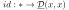
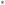

Next: Chapter 4 Up: Part I. Derived Functors Previous: Chapter 1 Contents
Given by the identity element  But I keep running into the implicit assumption that all morphisms from  to your hom object are in correspondence with actual arrows, and I don't know where in the assumptions themselves this is supposed to lie.
Oh this is basically exactly by definition: the morphisms of the underlying category are exactly given by these maps it's all good. How dumb. We have access to all the possible maps so it's good.